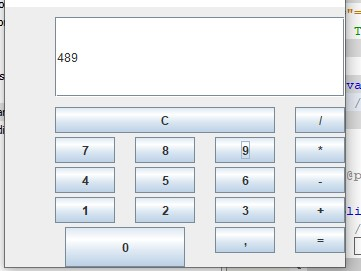

Karya & Proyek Saya
Lomba Karya Tulis Ilmiah
Transformasi Digital Sebagai Strategi Peningkatan Daya Saing Ekonomi Indonesia di Era Industri 4.0.

Kalkulator GUI
Mengembangkan aplikasi kalkulator dengan antarmuka grafis (GUI) menggunakan Java dan NetBeans IDE.
Kompetensi LSP
Bersertifikasi LSP P1 dalam Teknik Komputer dan Jaringan, kompeten dalam instalasi, perakitan, dan konfigurasi sistem komputer serta jaringan.